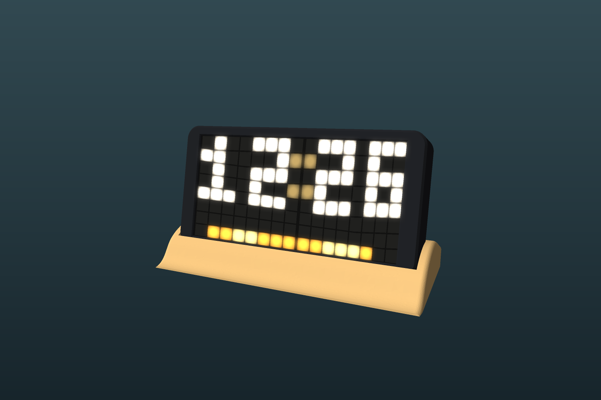

Sandbar Clock Installer
Put the clock's firmware on your ESP32 from this page. There's nothing to download or install.

Install the firmware
- Connect your board to this computer with a USB data cable. If the clock is already built, unplug its power socket first.
- Select the button below, choose your board from the list, then select Connect.
- Follow the prompts. Installing takes about a minute. Don't unplug the board until it finishes.
https:// address.
Updating a clock you've already set up? When asked, choose not to erase it, and it keeps your Wi-Fi and settings.
Which board and pin?
| Board | LED data pin |
|---|---|
| ESP32-C3 SuperMini | GPIO 4 |
| ESP32-S3 (8MB flash or more) | GPIO 12 |
The installer detects your chip by itself.
After installing
- Join the Sandbar-Clock-Setup Wi-Fi network. The password is
sandbar1234. - Open
http://192.168.4.1if the page doesn't appear by itself. - Open Panel layout and follow the steps until the L and R read correctly.
- Open Wi-Fi and timezone, then choose your network and timezone.
The full parts list, wiring and case files are in the build guide.